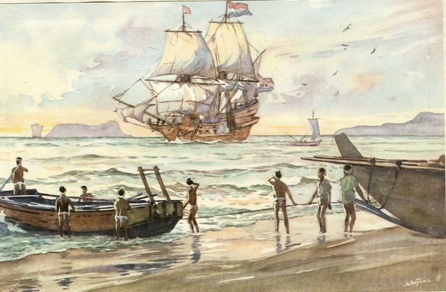
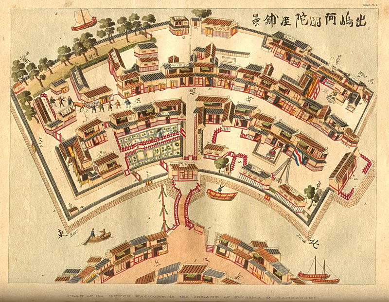
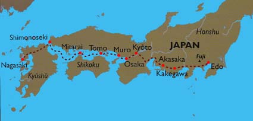

Nederland en Japan: een eeuwenoude relatie
Zoals te zien was in de video op de homepagina heeft Nederland een unieke geschiedenis en relatie met Japan. Maar hoe kwam deze precies tot stand?
Nadat de Edo-periode (1603-1867) begon in Japan, onderging Japan drastische veranderingen. De machtspositie ging over naar de Samoerai na de bepalende slag in Sekigahara en Japan werd een Shogunaat (een militaire staat) geregeerd door de Shogun Tokugawa Iieyasu. De grootste verandering die zich toen voordeed was de ‘Sakoku’ 鎖国(letterlijk gesloten land) in 1633. Japan werd volledig afgesloten van de buitenwereld en stopte alle contacten met de Westerse landen die handel probeerde te drijven met Japan, behalve Nederland.
Nederland arriveerde het eerst op het eiland Kyushu in het Zuiden van Japan op 19 april 1600 met een schip van de VOC genaamd De Liefde. Spoedig hierna sloot Japan dus zijn grenzen en zo goed als het enige contact van Japan met de buitenwereld vond plaats via Nederland die een handelspost hadden in het zuiden van Japan op een kunstmatig eiland genaamd Deshima in Nagasaki. De reden dat Nederland deze unieke situatie genoot had voornamelijk zoals kort in de video vermeld te maken met het Christendom. Voornamelijk de Spanjaarden en Portugezen probeerde het Christendom te verspreiden in Japan. De Shogun zag dit als een dreiging voor zijn regering en besloot onder anderen daarom dus Japan te sluiten. Echter, Nederland was voornamelijk protestants en had handel op het voorfront waardoor zij de unieke situatie hadden om nog handel te mogen drijven als enige met Japan.
Een voorwaarde die Japan wel nog had voor de handelsrelatie was dat de Nederlandse afgevaardigden jaarlijks naar de hoofdstad Edo (nu Tokio) moesten reizen met exotische geschenken aan de Shogun. Hierbij kan men denken aan telescopen, klokken, medicijnen, vuurwapens en zelfs exotische dieren. Nederland kreeg hier echter ook wel geschenken voor terug. De hofreis vond plaats over land en de Nederlanders werden altijd begeleid door de Japanners. Deze reis kon makkelijk 3 maanden duren aangezien de afstand tussen Nagasaki en Edo makkelijk 1200km is. De reis terug was altijd makkelijker aangezien dat kon gebeuren per schip wat maar een maand hoefde te duren. Buiten deze hofreis kwamen de Nederlanders dus niet af van hun toegewezen eilandje en daarom waren deze reizen zo uniek.
Naast goederen en producten brachten de Nederlanders ook nog iets anders heel waardevols mee vanuit het Westen naar Japan. Aangezien Japan zijn grenzen had gesloten bleven zij namelijk op het gebied van technologie en wetenschap redelijk ver achter op de rest van de wereld. Nederland bracht dus ook kennis op deze gebieden. Je kan denken aan betere gezondheidswetenschap en wetenschappelijke instrumenten zoals telescopen. Het leren van deze kennis kreeg ook de naam ‘Rangaku’ 蘭学 letterlijk (Nederlandse studies). De wetenschappelijke kennis kwam namelijk veelal aan in boekvorm die natuurlijk in het Nederlands waren. Dit is onder andere de reden dat er in het hedendaags Japans nog een aantal Nederlandse woorden voorkomen zoals messu voor een chirugisch mes of bieru voor bier.
Uiteindelijk kwam er een einde aan de monopolie van handel die Nederland had in Japan doordat Amerika de grenzen open forceerde met een vloot van technologisch meer geavanceerde schepen dan Japan aankon. Dit gepaard met binnenlandse onrust zorgde ervoor dat vrij snel de Japanse keizer weer terug ingesteld werd en dat Japan zijn grenzen opende voor meer landen dan alleen in Nederland. Dit waren in dit geval onder andere Amerika, Engeland en Rusland. Hierna onderging Japan hele snelle veranderingen en haalde ook heel snel de achtergang in op technologie die ze hadden met de rest van de wereld. Over de tijd sinds dien tot het heden weet men veel over de groei die de Japanners maakten op het wereldtoneel. Na industriele revolutie, oorlogen en vrede is er nu in het heden nog steeds een speciale band tussen Nederland en Japan. Japan heeft zelfs een themapark in Nagasaki in de buurt van Deshima dat volledig in het teken van Nederland staat. Dit themapark heet Huis Ten Bosch.